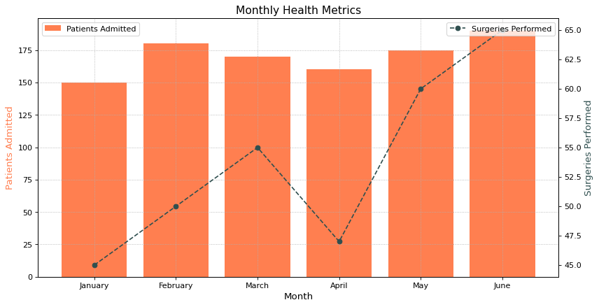
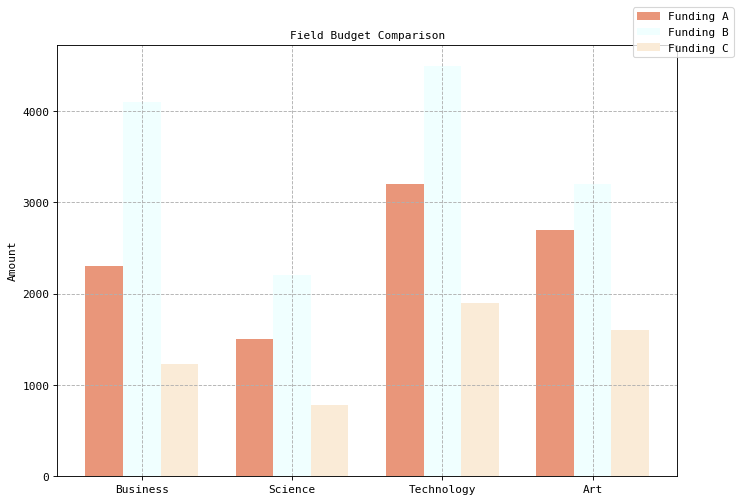
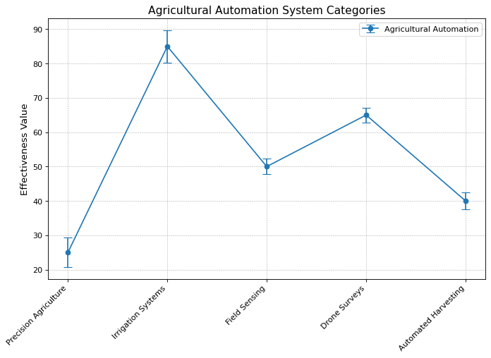

Total failure cases of factor "addition": 4
| ID | Chart | Question | Additional Information | Pitfalls | Most relevant pitfall |
173.png |
 |
What is the sum of surgeries performed in January and May?
|
{
"Ground Truth": "105",
"Prediction": "65"
}
|
### Potential Pitfalls in the Chart Image: 1. **Misinterpretation of Line Chart Values**: The line chart for "Surgeries Performed" uses a secondary y-axis with a different scale than the bar chart. This can make it difficult to read the exact values directly from the chart without referring to the axis. 2. **Missing Data Labels**: There are no data labels on the points or bars, so one has to rely solely on the axes to determine the exact values, which can lead to misreading the graph. 3. **Overlapping Visual Elements**: The bar chart and line chart share the same x-axis but have different y-axes. The proximity of the visual elements might cause confusion if not carefully observed. 4. **Incorrect Legend Association**: The legend associates the dashed line with "Surgeries Performed," but if someone misinterprets the legend, they might confuse the metrics. ### Most Relevant Pitfall: The most relevant pitfall leading to the error is the **misinterpretation of the line chart values due to the lack of direct data labels**. Without clear labels on the data points of the line chart, it's easy to mistake the value for May as 65 instead of reading it correctly as around 60, and then adding it incorrectly to January's value of 45. <most_relevant>Misinterpretation of line chart values due to the lack of direct data labels</most_relevant> |
Misinterpretation of line chart values due to the lack of direct data labels |
629.png |
 |
What is the combined amount of Funding C for Business and Technology?
|
{
"Ground Truth": "3130",
"Prediction": "3100"
}
|
### Potential Pitfalls in the Chart Image 1. **Bar Overlap and Clarity**: The bars for different fundings might visually overlap or blend, making it difficult to distinguish precise values for individual funding types, especially when looking at Funding C. 2. **Color Differentiation**: The colors chosen for the bars, particularly the light pastel shades for Funding C, may not provide sufficient contrast against the background or other bars, which can lead to misinterpretation of the exact values. 3. **Grid Lines and Tick Marks**: The grid lines and tick marks on the y-axis are not closely aligned with the bar heights, which can cause estimation errors when reading off values directly from the chart. 4. **Label and Legend Placement**: The legend is placed outside the plot area, which requires viewers to cross-reference the colors with the labels, potentially leading to confusion if the colors are not distinct enough. 5. **Precision of Values**: The chart does not display numerical values above or inside the bars, forcing viewers to estimate the values based on the bar heights relative to the y-axis, which introduces inaccuracies. --- ### Most Relevant Pitfall The most relevant pitfall leading to the error in calculating the combined amount of Funding C for Business and Technology is the **lack of precision in visual value estimation** due to the absence of numerical labels on the bars. This forces the viewer to rely solely on visual alignment with the y-axis, which can easily result in rounding or estimation errors. <most_relevant>lack of precision in visual value estimation</most_relevant> |
lack of precision in visual value estimation |
901.png |
 |
The color of the line is blue, and the marker shape is a circle. What is the combination of these attributes for 'Agricultural Automation'?
|
{
"Ground Truth": "Blue line with circle markers",
"Prediction": "To determine the combination of the attributes for 'Agricultural Automation', let's break down the information given:\n\n1. The color of the line: The line representing 'Agricultural Automation' is blue.\n2. The marker shape: The markers used for 'Agricultural Automation' are circles.\n\nCombining these two attributes, we get a blue line with circular markers.\n\n<BlueCircle>"
}
|
First, let’s identify potential pitfalls in the chart image that could lead to errors in understanding the attributes of 'Agricultural Automation': 1. **Legend Representation**: The legend shows a small segment of the line and marker used for 'Agricultural Automation'. If the legend is not clear or too small, it may be difficult to discern the exact color and marker shape. 2. **Color Consistency**: The color of the line must be consistent throughout the chart. Any variation in color might confuse the viewer. 3. **Marker Shape Clarity**: The marker shape should be distinct and easily recognizable. If the markers are not clearly visible or if they are too small, identifying their shape can be challenging. 4. **Contrast and Visibility**: The contrast between the line, markers, and background should be sufficient. Poor contrast can make it difficult to distinguish the attributes accurately. 5. **Error Bar Overlap**: Error bars might overlap with the markers, potentially obscuring part of the marker shape. Among these potential pitfalls, the **most relevant** one that likely caused the model's error is the clarity and visibility of the legend representation. The legend is supposed to provide a quick reference for the line and marker attributes, but if it is unclear, the model might misinterpret the attributes. Thus, the most relevant pitfall is: <most_relevant>Unclear or too small legend representation, making it difficult to discern the exact color and marker shape.</most_relevant> |
Unclear or too small legend representation, making it difficult to discern the exact color and marker shape. |
901.png |
Given the position of the legend is the upper right corner and the font size is 10, what is the combined description of these attributes?
|
{
"Ground Truth": "legend located at upper right corner with font size 10",
"Prediction": "Settings"
}
|
The potential pitfalls in the chart image that could cause the model's error include: 1. **Lack of Explicit Legend Descriptions**: The chart does not explicitly describe the legend’s position or font size within its visual elements. The legend itself provides no textual indication of these attributes. 2. **Overly Generalized Terminology**: The term "Settings" might be too vague for the model to interpret correctly without additional context about which specific settings are being referred to. 3. **Absence of Direct Annotations**: There are no annotations or labels directly pointing out the legend's position or font size on the chart itself. The most relevant pitfall to this error is the **lack of explicit legend descriptions**. Since the chart does not visually indicate the legend's position and font size, the model lacks the necessary information to accurately combine these attributes into a descriptive sentence. <most_relevant>lack of explicit legend descriptions</most_relevant> |
lack of explicit legend descriptions |